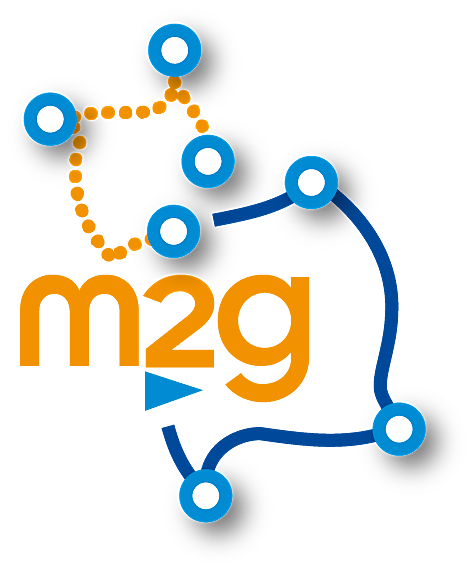

Moving2Gather productions

2019
Théo Michelot, Pierre Gloaguen, Paul G. Blackwell and Marie-Pierre Étienne. The Langevin diffusion as a continuous-time model of animal movement and habitat selection to appear in Methods in Ecology and Evolution. arXiv
Rocio Joo, Matthew E. Boone, Thomas A. Clay, Samantha C. Patrick, Susana Clusella-Trullas, Mathieu BasilleME Boone, TA Clay, SC Patrick, S Clusella-Trullas, M Basille. Navigating through the R packages for movementarXiv preprint arXiv:1901.05935
Rémi Patin, Marie-Pierre Étienne, Émilie Lebarbier, Simon Chamaillé-Jammes,Simon Benhamou. Identifying stationary phases in multivariate time-series for highlighting behavioural modes and home range settlements. bioRXiv
 Théo Michelot, Marie-Pierre Étienne, Pierre Gloaguen. Rhabit: Estimating ressource selection function from movement data
Théo Michelot, Marie-Pierre Étienne, Pierre Gloaguen. Rhabit: Estimating ressource selection function from movement data
2018
- Rémi Patin, Marie-Pierre Étienne, Émilie Lebarbier, Simon Benhamou. segclust2d: Bivariate Segmentation/Clustering Methods and Tools
Rocio Joo, Marie-Pierre Etienne, Nicolas Bez, Stéphanie Mahévas. Metrics for describing dyadic movement: a review Movement Ecology
2017
- Pierre Gloaguen, Marie-Pierre Étienne, Sylvain Le Corff Stochastic differential equation based on a multimodal potential to model movement data in ecology. JRSSC
2016
Pierre Gloaguen, Mathieu Woillez, Stéphanie Mahévas, Youen Vermard and Etienne Rivot (2016) Is speed through water a better proxy for fishing activities than speed over ground? Aquatic Living Resources.
Tremblay Y., Bertrand S. (2016) Le “Bio-logging” comme outil d’étude et de suivi des écosystèmes marins ou: comment espionner les habitants de la mer ? Collection Mers et Océans, éditions ISTE, dir. A. Mariotti, eds. A. Monaco & P. Prouzet.
Boyd, C., Grünbaum, D., Hunt Jr, G.L., Punt, A., Weimerskirch, H., Bertrand, S. (2016) Effectiveness of social information used by seabirds searching for unpredictable and ephemeral prey. Behavioural ecology, in press, 12 pp.,
Gloaguen, P., Etienne MP., Le Corff S (2016) Stochastic differential equation based on a Gaussian potential field to model fishing vessels trajectories, in revision. version arXiv
Before 2015
Gloaguen, P. (2015). Modélisation mécaniste et stochastique des trajectoires pour l’halieutique. Mémoire de thèse de doctorat de l’AgrocampusOuest. Ifremer. 202pp
Boyd C., Castillo R., Hunt G., Punt A., VanBlaricom G., Weimerskirch H., Bertrand S. (2015) Predictive modelling of habitat selection by marine predators with respect to the abundance and depth distribution of pelagic prey. Journal of Animal Ecology, 84:1575-1588.
Bertrand S., Joo R., Fablet R. (2015). Generalized Pareto for a pattern-oriented random walk modelling of organisms’ movements. PLoS ONE, 10(7):e0132231.
Joo R., Salcedo O., Segura M., Bouchon M., Gutierrez M. and Bertrand S. (2015) Defining fishing spatial strategies from VMS data: Insights from the world’s largest monospecific fishery. Fisheries Research, 164:223-230
Gloaguen P, Mahevas S., Rivot E., Woillez M, Guitton Jerome, Vermard Y., Etienne MP (2015). An autoregressive model to describe fishing vessel movement and activity. Environmetrics, 26(1), 17-28. Publisher’s official version : http://doi.org/10.1002/env.2319 , Open Access version : http://archimer.ifremer.fr/doc/00179/29049/
Walker, E., Rivoirard, J., Gaspar, Ph., and Bez, N. (2015). From foragers’ tracks to preys’ distributions. Ecological Applications, 25, 3, 826-833.
Gimenez, O., Buckland, S.T., Byron, M., Bez, N., Bertrand, S., Choquet, R., Dray, S., Etienne, M.P., Fewster, R., Gosselin, F., Mérigot, B., Monestiez, P., Morales, J.M., Mortier, F., Munoz, F., Ovaskainen, O., Pavoine, S., Pradel, R., Schurr, F.M., Thomas, L., Thuiller, W., Trenkel, V., de Valpine, P., Rexstad, E. (2015). Statistical ecology comes of age. Biology Letters, 10:20140698.
Joo R., Bertrand A., Bouchon M., Segura M., Chaigneau A., Demarcq H., Tam J., Simier M., Gutiérrez M., Gutierrez D., Fablet R., Bertrand S. (2014) Ecosystem scenarios shape fishermen spatial behavior. The case of the Peruvian anchovy fishery in the Northern Humboldt Current system. Progress in Oceanography, 128:60-75
Boyd C., Punt A. E., Weimerskirch H., Bertrand S. (2014) Movement models provide insights into variation in the foraging effort of central place foragers. Ecological Modelling, 286:13-25
Fablet R., Chaigneau A., Bertrand S. (2014) Multiscale analysis of geometric planar deformations: application to wild animals electronic tracking and satellite ocean observation data. IEEE 8
Joo R., Bertrand S., Tam J., Fablet R. (2013). Hidden Markov Models: The Best Models for Forager Movements?. PLoS ONE, 8:e71246
Bertrand S., Joo R., Arbulu C., Tremblay Y., Barbraud C., Weimerskirch H. (2012) Local depletion by a fishery can affect seabird foraging. Journal of Applied Ecology, 49: 1168–1177.
Weimerskich H, Bertrand S., Silva J., Peraltilla S., Bost C. (2012). Foraging in Guanay cormorant and Peruvian booby, the major guano-producing seabirds in the Humboldt Current System. Marine Ecology Progress Series, 458: 231-245
Bez N., Bertrand S. (2011) The duality of fractals: roughness and self-similarity. Theoretical Ecology, 4:371-383. Bez, N., Walker, E., Gaertner, D., Rivoirard, J., and Gaspar, Ph. (2011). Fishing activity of tuna purse seiners estimated from vessel monitoring system (VMS) data. Canadian Journal of Fisheries and Aquatic Sciences, 68, 1998-2010.
Joo R., Bertrand S., Chaigneau A., Ñiquen M. (2011). Optimization of an artificial neural network for identifying fishing event positions from VMS data. Ecological Modelling,222:1048-1059